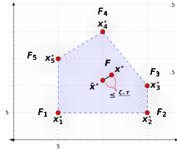
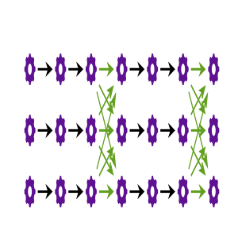
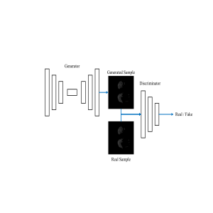

Papers

The Limits and Potentials of Local SGD for Distributed Heterogeneous Learning with Intermittent Communication
In this paper, we provide new lower bounds for local SGD under existing first-order data heterogeneity assumptions, showing that these assumptions are insufficient to prove the effectiveness of local update steps.
View Paper
On the Convergence of Local SGD Under Third-Order Smoothness and Hessian Similarity
However, there is a gap between the existing convergence rates for Local SGD and its observed performance on real-world problems. It seems that current rates do not correctly capture the effectiveness Local SGD. We first show that the existing rates for Local SGD in a heterogeneous setting cannot recover the correct rate when the global function is quadratic. Then we first derive a new rate for the case that the global function is a general strongly convex function depending on third-order smoothness and Hessian similarity.
View Paper
Segmentation of Lungs COVID Infected Regions by Attention Mechanism and Synthetic Generated Data
This research proposes a method for segmenting infected lung regions in a CT image. For this purpose, a convolutional neural network with an attention mechanism is used to detect infected areas with complex patterns. Attention blocks improve the segmentation accuracy by focusing on informative parts of the image. Furthermore, a generative adversarial network is used to generate synthetic images for data augmentation and expansion of small available datasets. Experimental results show the superiority of the proposed method compared to some existing procedures.
View Paper
Bifurcated Autoencoder for Segmentation of COVID-19 Infected Regions in CT Images
This paper proposes an approach to segment lung regions infected by COVID-19 to help cardiologists diagnose the disease more accurately, faster, and more manageable. We propose a bifurcated 2-D model for two types of segmentation. This model uses a shared encoder and a bifurcated connection to two separate decoders. One decoder is for segmenta-tion of the healthy region of the lungs, while the other is for the segmentation of the infected regions. Experiments on publically available images show that the bifurcated structure segments infected regions of the lungs better than state of the art.
View Paper